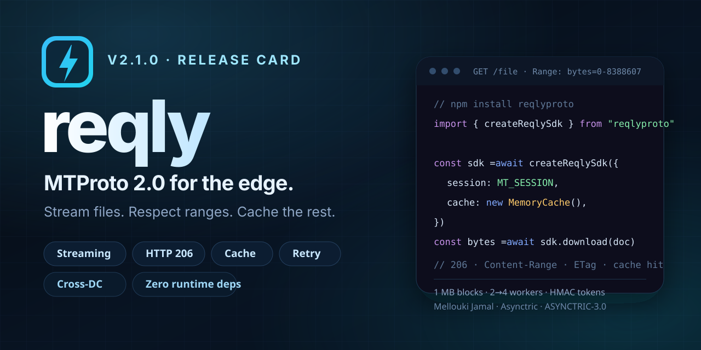

Small client.
Real bytes. Cached.
reqly is a lightweight MTProto 2.0 request/reply client for Cloudflare Workers and Node. Version 2.1 adds a reference-safe byte cache, a first-class retry policy, corrected SDK refresh handling, HTTP 304 responses and a documentation set built for real deployments.
Synthetic demo: every byte on this page is generated locally. No Telegram request is made and no credential is used.

What changed in 2.1.0
The protocol surface is unchanged. This release makes repeated reads cheaper, failures recoverable, and the SDK match its documentation.
MemoryCache
An LRU byte cache with a hard budget, per-entry TTL, copy-safe reads and hit/miss/eviction counters. No dependencies.
src/cache.tsEdge Cache API
createCacheApiStore(caches.default) adapts the standard Cache API to the SDK contract in one line.
withRetry
Exponential backoff, bounded jitter, small FLOOD_WAIT absorption and abort support. Only transient errors are repeated.
src/retry.tsSDK correctness
download() forwards refresh, reads through the cache and reports monotonic progress. worker() inherits the session.
Reference-safe keys
The file_reference fingerprint is part of every cache key, so a refreshed document cannot reuse stale bytes.
Docs that ship
Getting started, cookbook, export-by-export API, FAQ, security policy, rebuilt SDK guide and bilingual READMEs.
docs/Cache in action
Simulated 12 × 1 MB blocks. The first download fills the cache; the second is served locally. The key includes the document id, access hash, file-reference fingerprint, offset and length.
Resilience, not blind repetition
A simulated sdk.hashes() call that fails twice with a transient transport error and then succeeds. File-specific errors such as FILE_REFERENCE_EXPIRED are never retried blindly.
const entries = await withRetry(() => sdk.hashes(document), { retries: 3, baseDelayMs: 150, maxDelayMs: 4000, jitter: 0.2, respectFloodWait: true, signal: request.signal, })
Attempt log
Range streaming with scroll support
Drag the slider or scroll the viewport to seek. Each visible block is a simulated 1 MB upload.getFile request assembled into an HTTP response with Content-Range, ETag and Accept-Ranges.
Request log
Measured, not estimated
Median of 3 runs on Node v26.4.0 (android/arm64) against the shipped dist/ build. Raw output lives in docs/benchmark-results.json and is reproducible with scripts/bench.mjs.

SHA-256 · 1 MB
Native WebCrypto. The streaming path deliberately avoids hashing inside a Worker request.
AES-CTR · 8 MB
Native, parallelizable primitive. Reserved for the documented CDN path; not the default file path today.
AES-IGE · 1 MB
Serial TypeScript backend. The embedded WASM module reduces this; the protocol itself cannot be parallelized.
Cache hit · 1 MB
A copied 1 MB block from MemoryCache. The network RPC it replaces costs hundreds of milliseconds.
The whole SDK in one screen
Download, range, stream, hashes, tokens and a Worker handler — with the raw client still one property away.
// npm install reqlyproto import { createReqlySdk, ReqlySdk, MemoryCache, withRetry, } from "reqlyproto" const sdk = await createReqlySdk({ session: MT_SESSION, // Worker secret dcSessions: DC_SESSIONS, // optional, FILE_MIGRATE_X cache: new MemoryCache({ maxBytes: 64 * 1024 * 1024 }), retry: { retries: 3, jitter: 0.2 }, }) const bytes = await sdk.download(document, { refresh }) const part = await sdk.range(document, 0, 512 * 1024 - 1) const stream = sdk.stream(document, { chunkSize: 512 * 1024 }) const hashes = await withRetry(() => sdk.hashes(document)) const token = await sdk.issueToken({ m: messageId, w: "work-1", k: "stream" }, 60) const handler = sdk.worker({ resolveDocument: () => document }) // raw TL access is still available await sdk.client.invoke(methodBytes) sdk.close()
Architecture
The static SVG works offline. Where Mermaid is available, the same flow renders live below it.

Read next
Documentation is part of the release, not an afterthought.